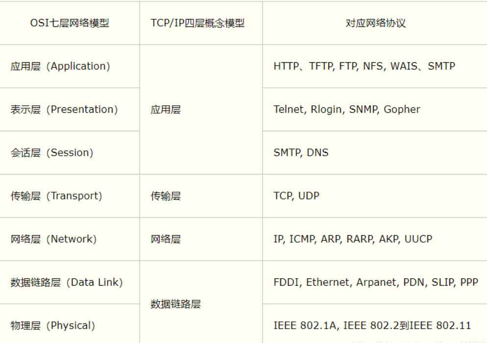
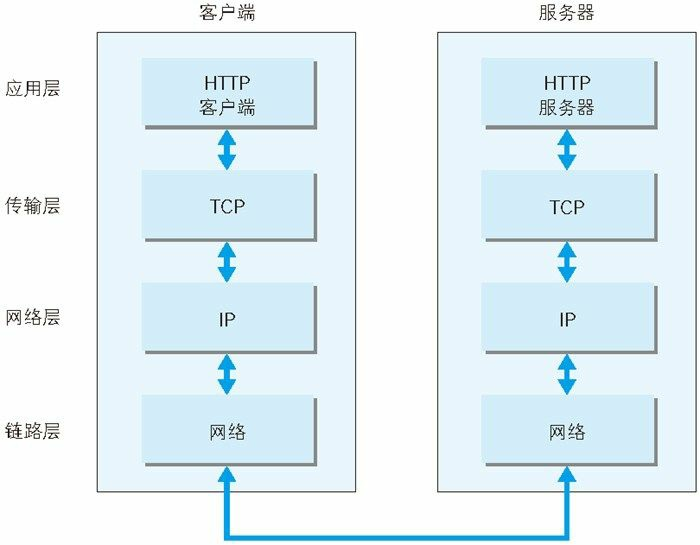
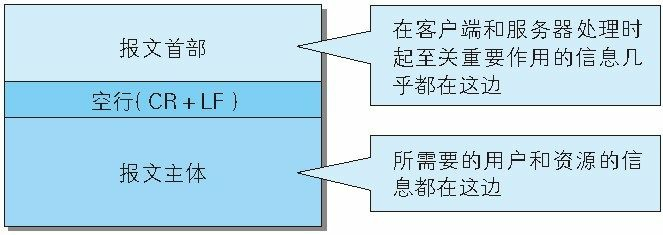
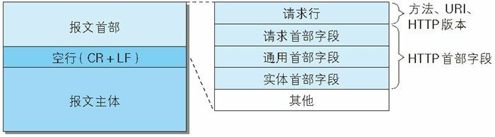
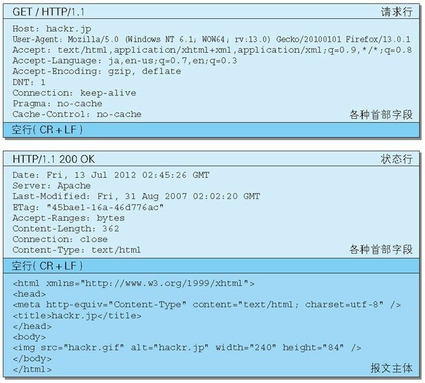
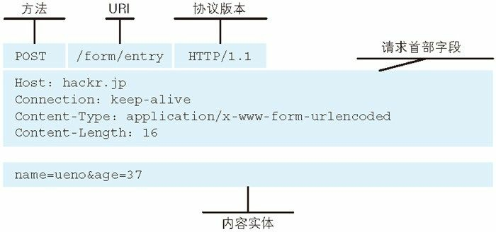

计算机网络基础
OSI七层模型
用于计算机或通信系统间互联的标准体系
1.同一层中的各网络节点都有相同的层次结构，具有同样的功能。
2.同一节点内相邻层之间通过接口进行通信。
3.层结构中的每一层使用下一层提供的服务，并且向其上层提供服务。
4.不同节点的同等层按照协议实现对等层之间的通信。

TCP/IP 的分层管理
互联网相关联的协议集合起来总称为TCP/IP
应用层：决定了向用户提供应用服务时通信的活动
1 | |
- DNS ：通过域名查找 IP 地址，或逆向从 IP 地址反查域名
传输层：对上层应用层，提供处于网络连接中的两台计算机之间的数据传输网络层：用来处理在网络上流动的数据包1
传输层协议：TCP UDP
链路层（链路层，网络接口层）:用来处理连接网络的硬件部分 - 封装：把数据信息包装起来
 URI由某个协议方案表示的资源的定位标识符包括 http、ftp、25mailto、telnet、file 等
URI由某个协议方案表示的资源的定位标识符包括 http、ftp、25mailto、telnet、file 等
HTTP 协议通过请求和响应的交换达成通信
用于 HTTP 协议交互的信息 叫HTTP 报文，请求端（客户端）的叫做请求报文，响应端（服务器端）的叫做响应报文。
分为报文首部和报文主体两块，两者由最初出现的空行（CR+LF）来划分，不一定要有报文主体。

HTTP 首部字段包含的信息最为丰富。首部字段同时存在于请求和响应报文内，并涵盖 HTTP 报文相关的内容信息。

请求行：包含用于请求的方法，请求 URI 和 HTTP 版本。
状态行：包含表明响应结果的状态码，原因短语和 HTTP 版本。
首部字段：包含表示请求和响应的各种条件和属性的各类首部

请求报文：由请求方法、请求 URI、协议版本、可选的请求首部字段和内容实体构成。
